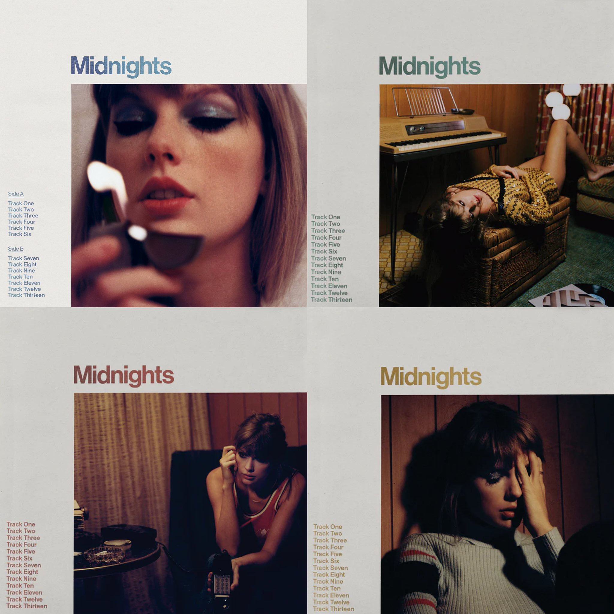

Midnights (2022)
Midnights is the tenth studio album by American singer-songwriter Taylor Swift, released on October 21, 2022, via Republic Records. Announced at the 2022 MTV Video Music Awards, the album marks Swift's first body of new work since her 2020 albums Folklore and Evermore. Midnights is a concept album about nocturnal contemplation, written and produced by Swift with Jack Antonoff as the main collaborator.